Experience
Most of my time outside class goes to BAPS, a Hindu organization, and the BAPS Swaminarayan Temple in Lowell. I have volunteered with BAPS Charities since 2017. Since 2022 I have worked with the children's program at our temple, first as a teacher and now as its coordinator. In 2023 I did CNC fabrication at BAPS Akshardham in New Jersey, full time over the summer and then on weekends once school started.
Youth leadership
Youth Activities Coordinator, BAPS Bal Mandal
Lowell, MA · Teacher from August 2022, coordinator since 2024
I started in Bal Mandal, the children's program at the BAPS Swaminarayan Temple in Lowell, as a teacher in August 2022. In 2024 I became the Youth Activities Coordinator, and now I lead the 15 peer teachers, the parent coordinators, and the other teams that work with Bal Mandal.
The more than 70 kids who come each week are split into four age groups: Group 0 for kindergarten and younger, Group 1 for grades 1 to 3, Group 2 for grades 4 to 6, and Group 3 for grades 7 and 8. Two or three peer teachers run each group. The rest of the peer teachers work as analysts, do our marketing, or help with logistics. I oversee all of them.
Before each weekly assembly I run a planning meeting where I assign lessons to the teachers and go over upcoming events. After the assembly we meet again to talk about what went well and what to change next time. I also train new peer teachers. Mostly I oversee, but when a teacher is out that week, I fill in and teach the lesson myself.
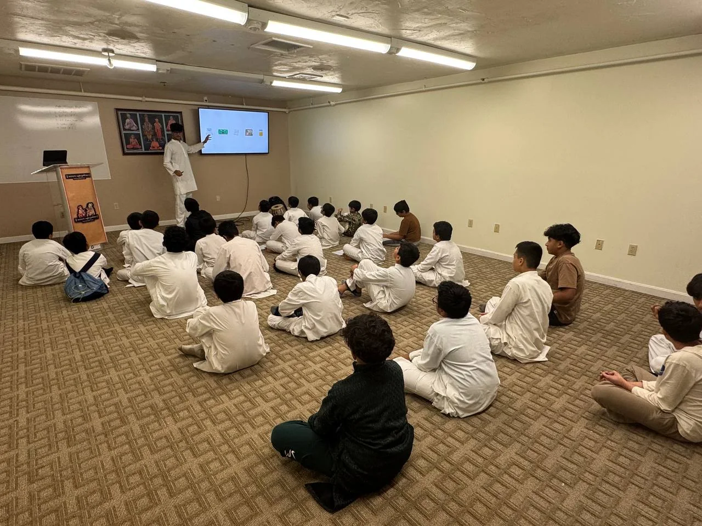
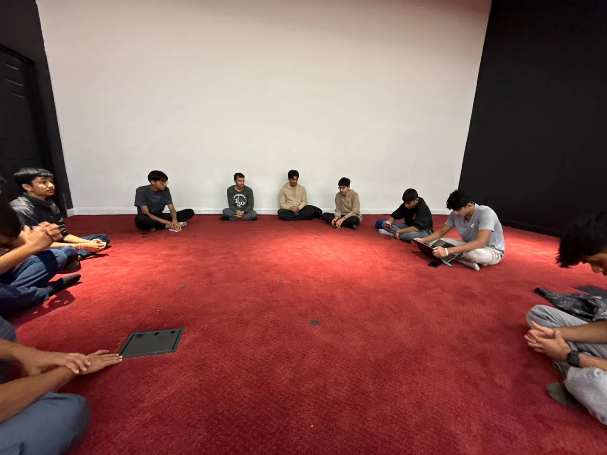
Bal Balika Summer Shibir
The Bal Balika Summer Shibir is a three-day camp for children in grades 4 through 8. It teaches values through activities, stage programs, and breakout sessions, and each one has more than 1,000 participants. In 2023, 2024, and 2025 I helped put on the stage programs for the whole camp. In 2026 I ran a smaller shibir.
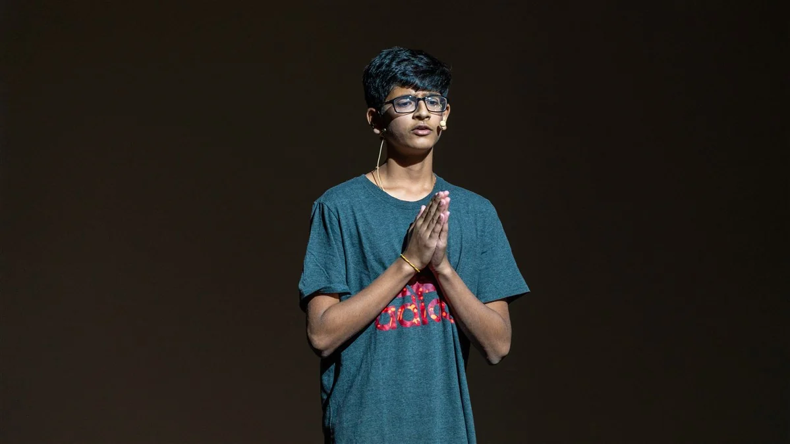
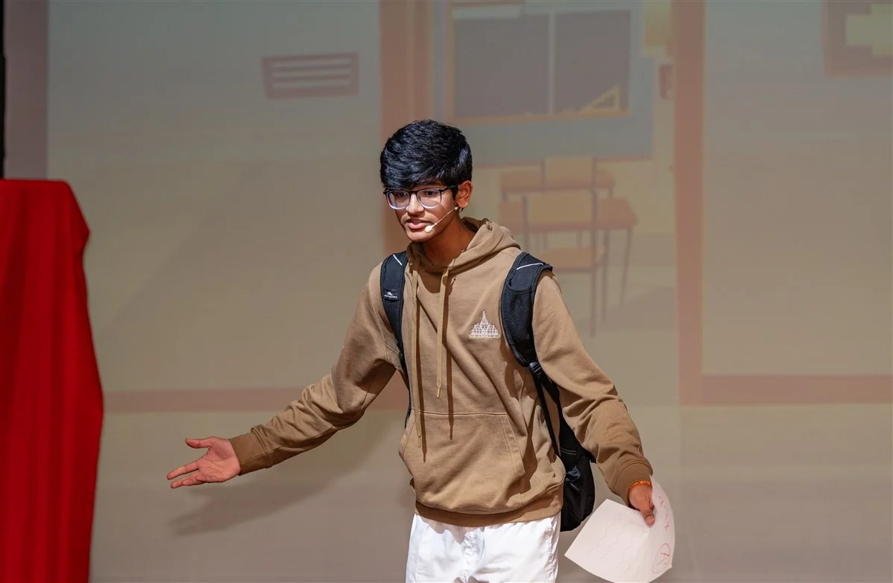
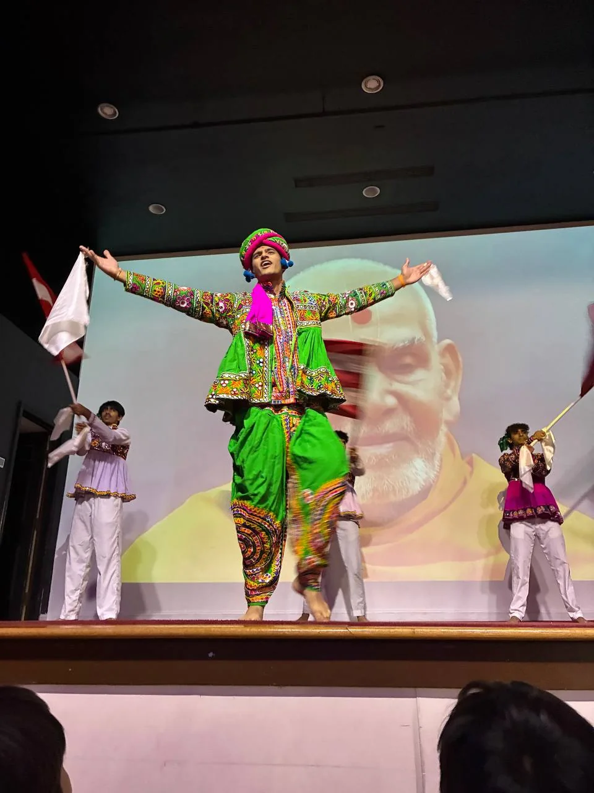
Kids Diwali Celebration
Every year 400 to 500 children come to our temple for the Kids Diwali Celebration: a stage program, activities, food, prizes, and arcade-style games built around Diwali. I handled the logistics in 2023, 2024, and 2025. That meant being the link between the departments, including food, games, prizes, program, and the audiovisual team, so each one knew what the others needed and when. For the 2026 celebration on October 25, I also cut stage props and decorations for the temple on a CNC hot-wire cutter.

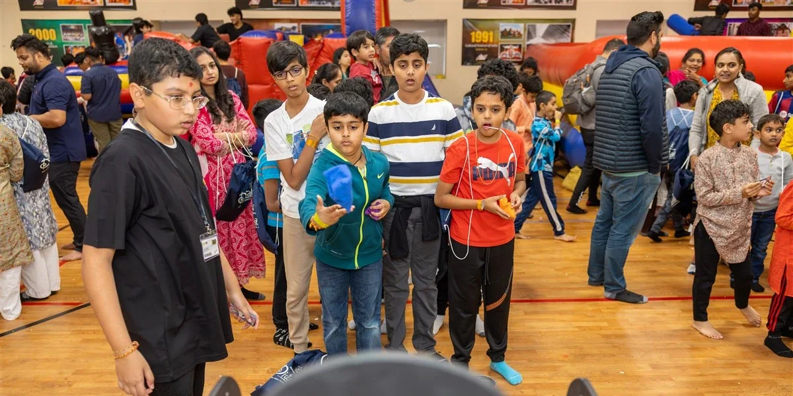
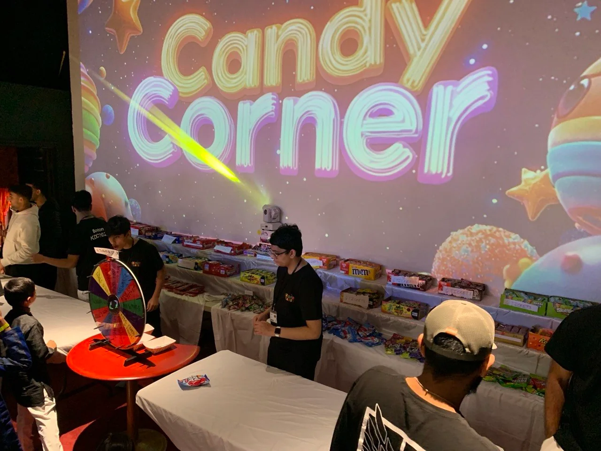
Kishore Mandal festivals
I also volunteer on logistics for Kishore Mandal, the temple's high school wing. For its major cultural festivals, which draw more than 1,000 people, I help coordinate the stage setup and crowd control.
National youth convention, 2027 (upcoming)
I am preparing to help run a national BAPS youth convention in 2027. More than 10,000 young people are expected.
Fabrication
Full-Time Volunteer, BAPS Akshardham
Robbinsville, NJ · July 2023 to October 2023
In the summer of 2023 I worked full time in the digital fabrication shop at BAPS Akshardham in Robbinsville, New Jersey. I was there seven days a week, usually for eight hours a day or more. When 9th grade started in September I switched to weekends: I traveled down Friday night, worked Saturday and Sunday, and came home Sunday night. During the week I kept up with my schoolwork.
The shop made the ornamental parts for a large cultural building. I drew components in CorelDRAW and Adobe Illustrator and turned the drawings into CNC files. Then I ran the industrial CNC routers and hot-wire cutters that cut them out. Most of my pieces were detailed foam designs, cut from styrofoam and rigid foam insulation board. I also made parts in wood and PVC.
The senior designers taught me to run the design programs and the machines. From them I learned the basics of drawing a part so a machine can actually cut it, and how a piece gets from a drawing to a finished part. They also pushed me to be more creative with my own designs. Being in that shop, I saw how a project that large is organized so every piece comes together on time.
I still use those skills. In October 2026 I cut the stage props and the decorations for our temple's Kids Diwali Celebration on a CNC hot-wire cutter.


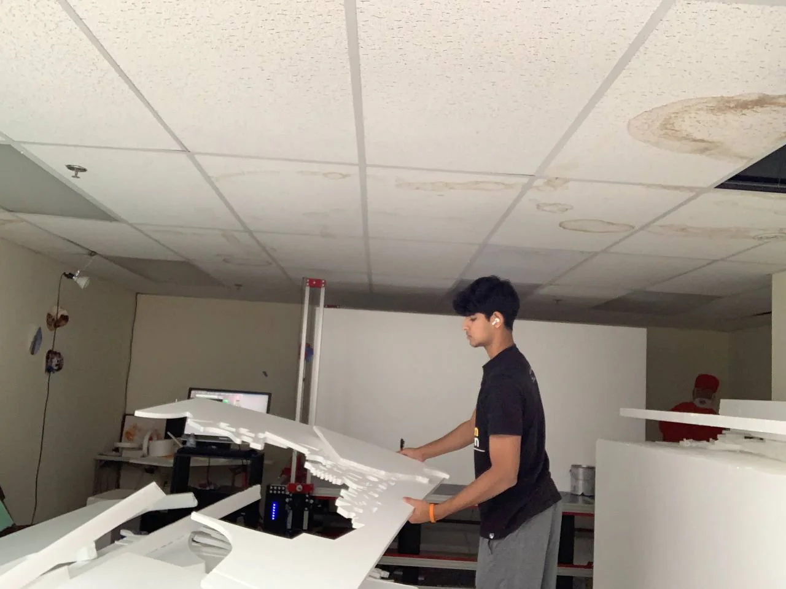
Community service
Walkathon Organizer and Outreach Volunteer, BAPS Charities
Lowell, MA · June 2017 to present
The biggest BAPS Charities event in Lowell is the annual Walk-Run, a walkathon that raises money for a different cause each time. I help organize it every year, setting up the routes and running registration. I raise pledges for it each year, and across high school I have helped raise more than $15,000. Recent walks have supported The Nature Conservancy, breast cancer awareness, the Lowell Police and Tyngsborough Fire departments, and Tyngsborough Public Schools. The 2025 walk had more than 650 participants.
The rest of the year I help with community cleanups, food drives, and health awareness events, usually with setup, check-in, and directing crowds. I also encourage other people in the community to get involved.
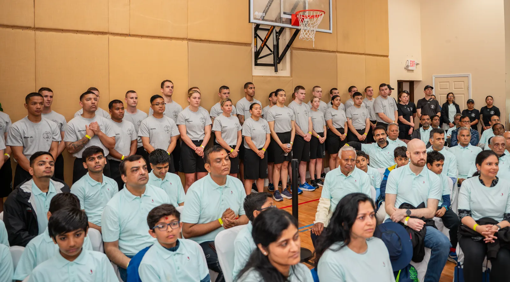
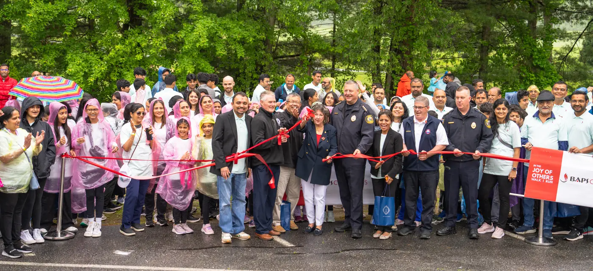
Work
Email Marketing Associate, ALPHAPEP LLC
Lowell, MA · May 2026 to present
I design targeted marketing emails for the company's products and send them out. I also manage the outgoing campaigns, so each one reaches customers on schedule.
School
Chelmsford High School.
Vice President, Artificial Intelligence Club
September 2025 to present
I manage the club's 15 members and host meetings every two weeks on using AI safely and the ethics of coding with it. I also led a project team that prepared a project for the IEEE MIT Undergraduate Research Technology Conference (URTC): an AI tool that monitors conditions at home to help care for household plants.
Captain, Track and Field
November 2023 to present
I compete in the high jump, the 55m hurdles, and the 110m hurdles, and I have run six varsity seasons, indoor and outdoor. At the MSTCA Division II State Relays our high jump relay team medaled three times, placing 4th, 4th, and 6th. As a captain I lead daily workouts for the team's 75+ athletes and mentor more than 35 underclassmen on form and discipline.
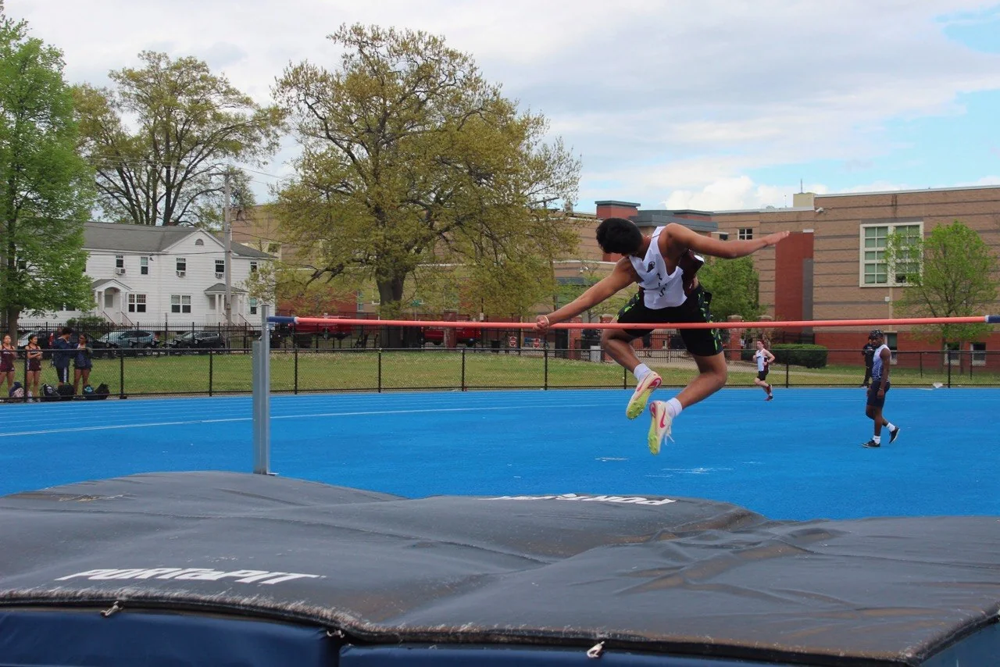
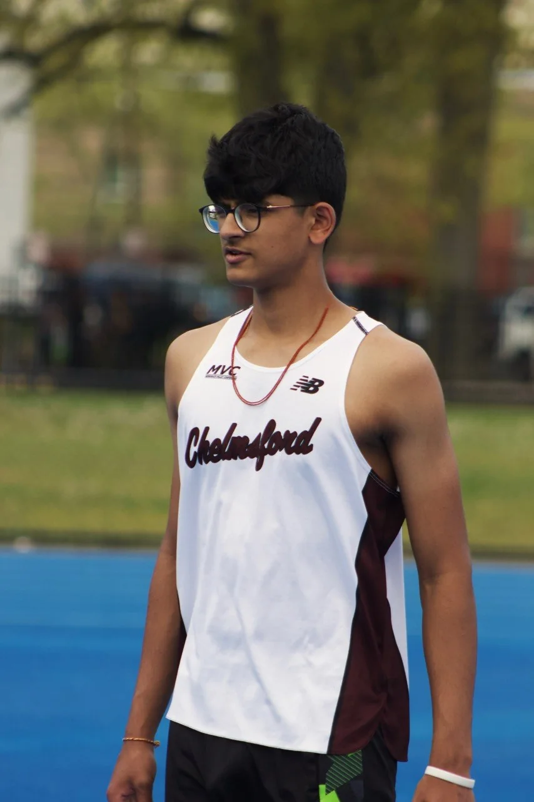
National Honor Society · Inducted March 2026
Robotics Club · September 2023 to June 2024
I was on a team that designed, built, and tested robots for VEX Robotics competitions. I programmed our robot to navigate competition mazes on its own and built the mechanisms that lifted plastic balls into the scoring baskets.
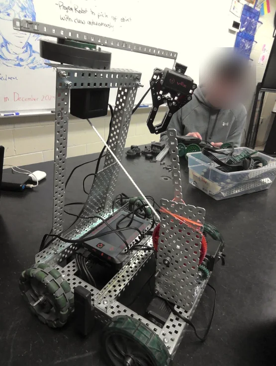
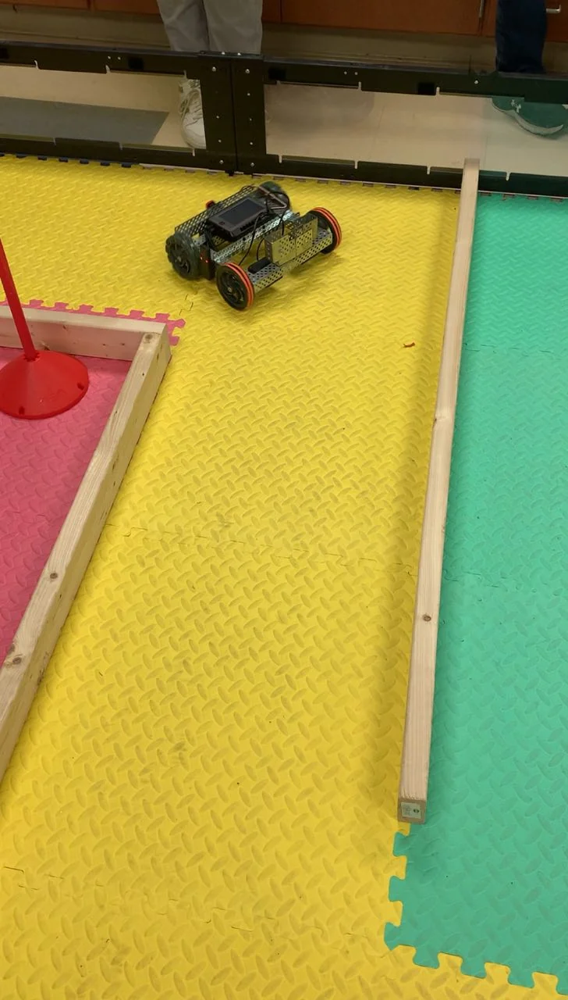